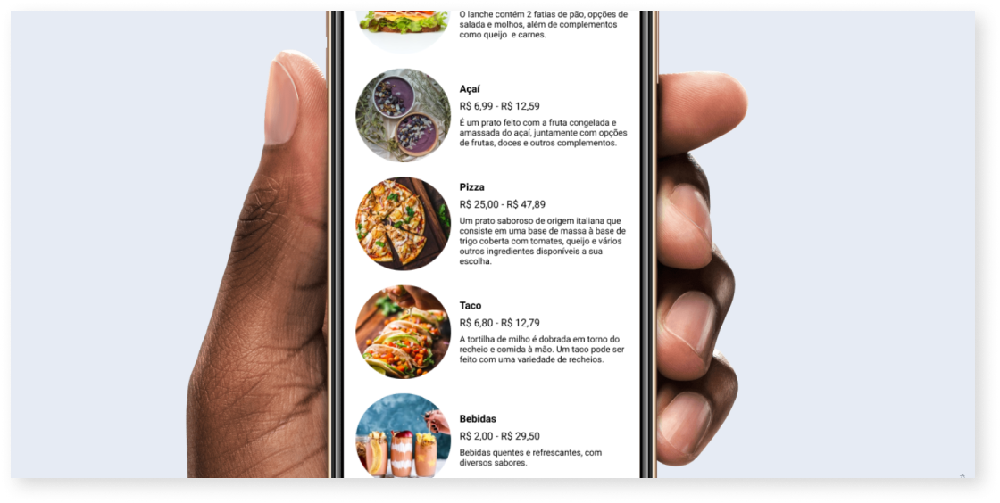

Food me é uma empresa que oferece serviço de personalização de comida. O aplicativo poderá melhorar a comunicação entre os clientes e os funcionários na hora do pedido.
Esse projeto de estudo é fictício
A variação entre as telas de Cadastro e Login dão um aspecto elegante e facilita na troca entre as telas.
Os campos de input ficam coloridos quando as informações estão corretas e também há uma seta para mostrar que está tudo pronto para o próximo passo.
Quando um produto é adicionado ao pedido, o status de visibilidade, mostra claramente que o pedido já foi adicionado.
Projetando o Food me, aprendi mais sobre as patters de UI e sobre design mobile. O design moderno, a tipografia elegante e as cores fazem desse aplicativo uma mescla entre simplicidade e imponência, trazendo desejos nos usuários, mas com um processo extremamente simples, sem distrações.